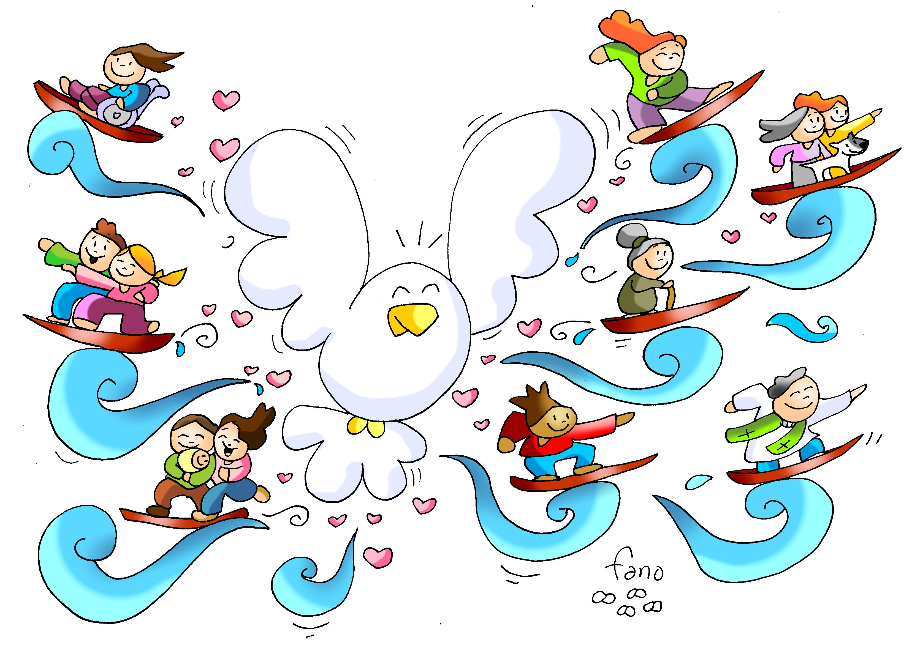
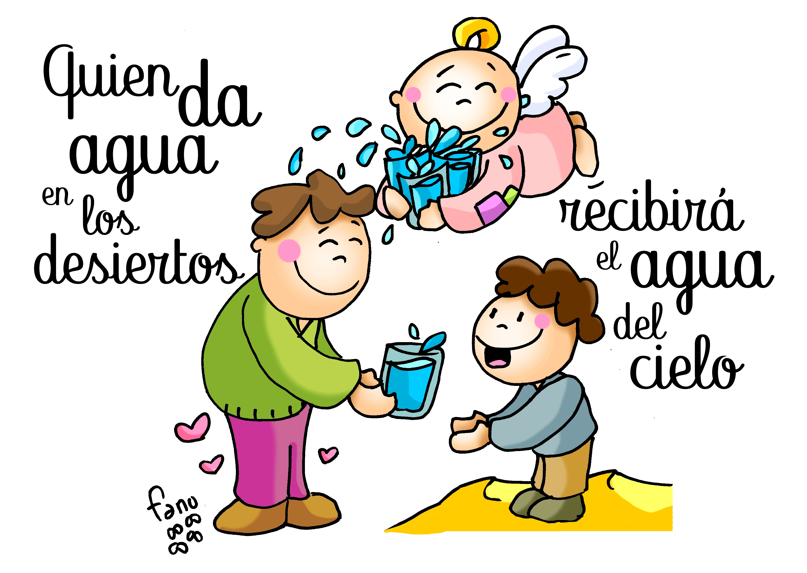
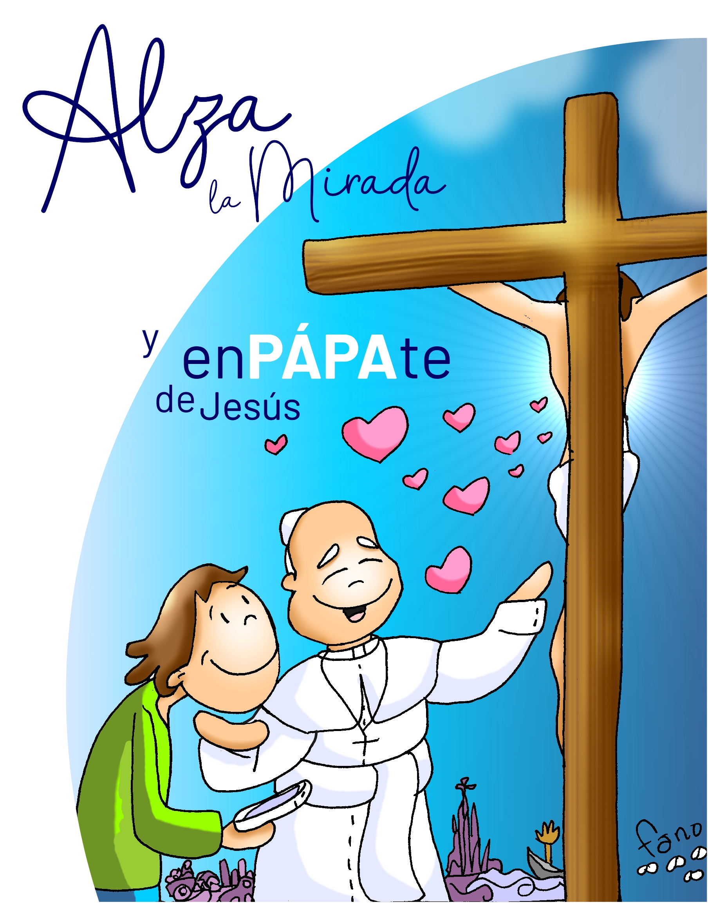
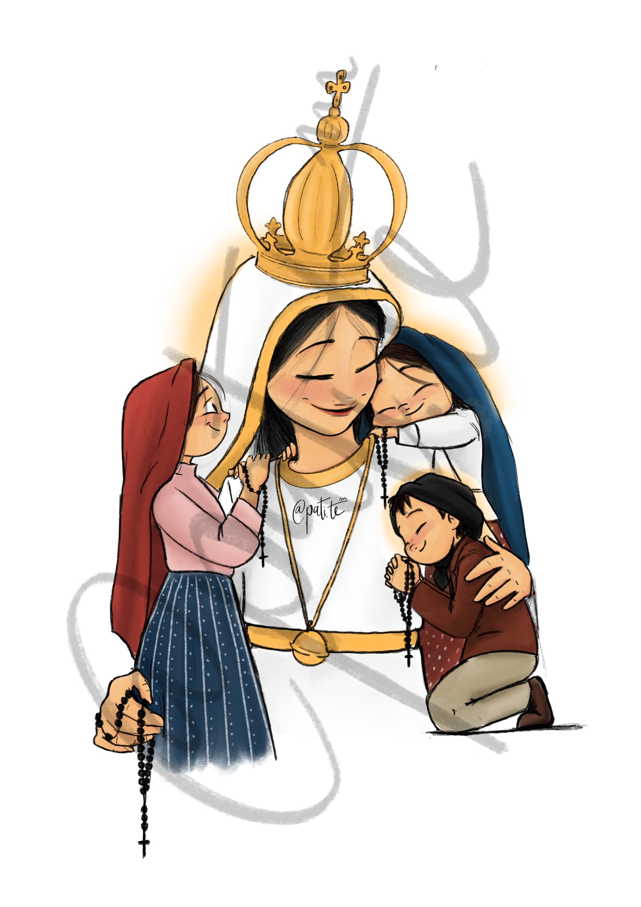

XXV DOMINGO DEL TIEMPO ORDINARIO
20 de septiembre de 2026


Canción de Entrada
PREPARAD EL CAMINO
PREPARAD EL CAMINO
PREPARAD EL CAMINO AL SEÑOR
Y ESCUCHAD LA PALABRA DE DIOS.(Bis)
Voz que clama en el desierto:
preparad los caminos de Dios,
desterrad la mentira por siempre,
preparad los caminos de Dios(Bis)

ACTO PENITENCIAL
Yo confieso ante Dios todopoderoso
y ante vosotros, hermanos,
que he pecado mucho de pensamiento, palabra, obra y omisión:
por mi culpa, por mi culpa, por mi gran culpa.
Por eso ruego a Santa María, siempre Virgen,
a los ángeles, a los santos y a vosotros, hermanos,
que intercedáis por mí ante Dios, nuestro Señor.
BENDICIÓN DEL AGUA
Señor, Dios todopoderoso, que por medio del agua...
(Se bendice el agua y se asperja sobre la asamblea)

GLORIA
Gloria a Dios en el cielo,
y en la tierra paz a los hombres que ama el Señor.
Te alabamos, te bendecimos, te adoramos, te glorificamos.
Te damos gracias, Señor Dios, Rey celestial.

LITURGIA DE LA PALABRA
Escuchemos la Palabra de Dios
PRIMERA LECTURA
55, 6-9
Buscad al Señor mientras se le encuentra, invocadlo mientras esté cerca; que el malvado abandone su camino, y el criminal sus planes; que regrese al Señor, y él tendrá piedad; a nuestro Dios, que es rico en perdón. Mis planes no son vuestros planes, vuestros caminos no son mis caminos –oráculo del Señor–. Como el cielo es más alto que la tierra, mis caminos son más altos que los vuestros, mis planes que vuestros planes.

SALMO RESPONSORIAL
Sal 144
Antífona: Cerca está el Señor de los que lo invocan
Día tras día, te bendeciré, Dios mío
y alabaré tu nombre por siempre jamás.
Grande es el Señor y merece toda alabanza,
es incalculable su grandeza.
El Señor es clemente y misericordioso,
lento a la cólera y rico en piedad;
el Señor es bueno con todos,
es cariñoso con todas sus criaturas.
El Señor es justo en todos sus caminos,
es bondadoso en todas sus acciones;
cerca está el Señor de los que lo invocan,
de los que lo invocan sinceramente.
ALELUYA
20,1-16

SEGUNDA LECTURA
1,20c-24.27a
Cristo será glorificado en mi cuerpo, sea por mi vida o por mi muerte. Para mí la vida es Cristo, y una ganancia el morir. Pero, si el vivir esta vida mortal me supone trabajo fructífero, no sé qué escoger. Me encuentro en ese dilema: por un lado, deseo partir para estar con Cristo, que es con mucho lo mejor; pero, por otro, quedarme en esta vida veo que es más necesario para vosotros. Lo importante es que vosotros llevéis una vida digna del Evangelio de Cristo.
EVANGELIO (1/2)
20,1-16
En aquel tiempo, dijo Jesús a sus discípulos esta parábola: «El Reino de los Cielos se parece a un propietario que al amanecer salió a contratar jornaleros para su viña. Después de ajustarse con ellos en un denario por jornada, los mandó a la viña. Salió otra vez a media mañana, vio a otros que estaban en la plaza sin trabajo, y les dijo: «Id también vosotros a mi viña, y os pagaré lo debido.» Ellos fueron. Salió de nuevo hacia mediodía y a media tarde e hizo lo mismo. Salió al caer la tarde y encontró a otros, parados, y les dijo: «¿Cómo es que estáis aquí el día entero sin trabajar?» Le respondieron: «Nadie nos ha contratado.» Él les dijo: «Id también vosotros a mi viña.» Cuando oscureció, el dueño de la viña dijo al capataz: «Llama a los jornaleros y págales el jornal, empezando por los últimos y acabando por los primeros.» Vinieron los del atardecer y recibieron un denario cada uno. Cuando llegaron los primeros, pensaban que recibirían más, pero ellos también recibieron un denario cada uno.
EVANGELIO (2/2)
20,1-16
Entonces se pusieron a protestar contra el amo: «Estos últimos han trabajado sólo una hora, y los has tratado igual que a nosotros, que hemos aguantado el peso del día y el bochorno.» Él replicó a uno de ellos: «Amigo, no te hago ninguna injusticia. ¿No nos ajustamos en un denario? Toma lo tuyo y vete. Quiero darle a este último igual que a ti. ¿Es que no tengo libertad para hacer lo que quiera en mis asuntos? ¿O vas a tener tú envidia porque yo soy bueno?» Así, los últimos serán los primeros y los primeros los últimos.» Palabra del Señor

LITURGIA EUCARÍSTICA
Preparémonos para la mesa del Señor
CREDO
Creo en Dios, Padre todopoderoso, creador del cielo y de la tierra.
Creo en Jesucristo, su único Hijo, nuestro Señor, que fue concebido por obra y gracia del Espíritu Santo; nació de Santa María Virgen; padeció bajo el poder de Poncio Pilato; fue crucificado, muerto y sepultado; descendió a los infiernos; al tercer día resucitó de entre los muertos; subió a los cielos y está sentado a la derecha de Dios Padre todopoderoso.
Desde allí ha de venir a juzgar a vivos y muertos.
Creo en el Espíritu Santo, la santa Iglesia católica, la comunión de los santos, el perdón de los pecados, la resurrección de la carne y la vida eterna. Amén.
Ofertorio
PADRE NUESTRO DE LA VIDA
Padre nuestro de la vida,
mío, de ése y de aquél
que vive en toda criatura
y ellos así han de creer.
Quisiera realzar tu nombre
viviendo aquí bajo el sol
tu mensaje de aquel monte
Lam Si7 Mim SiM7m Mim
de pobreza, paz y amor.
Danos pan para vivir
sólo el momento presente
ya que el día de mañana
quizás aquí no me encuentre.
No mires lo que hice mal
que yo no veré a mi deudor
y en mi camino hacia ti
Lam Si7 Mim SiM7m Mim
que no caiga en tentación.
Amén, amén, que no caiga en tentación.
Lam Si7 Mim Mi Lam Si7 Mim SiM7m Mim
Amén, amén, que sea así siempre Señor.
SANTO
Santo, santo, santo es el Señor,
Dios del universo.
Llenos están el cielo y la tierra de tu gloria.
Hosanna en el cielo.
Bendito el que viene en nombre del Señor.
Hosanna en el cielo.
PADRE NUESTRO
Padre nuestro, que estás en el cielo,
santificado sea tu nombre;
venga a nosotros tu reino;
hágase tu voluntad en la tierra como en el cielo.
Danos hoy nuestro pan de cada día;
perdona nuestras ofensas,
como también nosotros perdonamos a los que nos ofenden;
no nos dejes caer en la tentación,
y líbranos del mal.
RITO DE LA PAZ
Señor Jesucristo, que dijiste a tus apóstoles:
«La paz os dejo, mi paz os doy»,
no tengas en cuenta nuestros pecados,
sino la fe de tu Iglesia,
y conforme a tu palabra concédele la paz y la unidad.
Tú que vives y reinas por los siglos de los siglos. Amén.
La paz del Señor esté siempre con vosotros.
Comunión
TODO MI SER
Todo mi ser, todo lo que soy
te pertenece sólo a ti.
Desde mi pobreza,
Tú eres la fuerza.
Nada sé, sólo que caminaré.
LLEGASTE A MI VIDA CON TU LUZ,
CAMBIASTE MI MENTE CON TU AMOR,
VACIASTE MI ALMA Y AHORA ESTÁS
DENTRO DE MÍ.
Todo mi ser, todo lo que soy,
lo bueno y lo malo la pongo a tus pies.
Aunque a veces llegues a mi templo
y lo encuentres ya lleno,
no es verdad, sólo se llena
cuando Tú moras en él.

CANTO A MARÍA
Dios te salve, María;
llena eres de gracia;
el Señor es contigo.
Bendita tú eres entre todas las mujeres,
y bendito es el fruto de tu vientre, Jesús.
Santa María, Madre de Dios,
ruega por nosotros, pecadores,
ahora y en la hora de nuestra muerte. Amén.
Despedida
DE NOCHE IREMOS DE NOCHE
De noche iremos, de noche, que para encontrar la fuente,
Sólo la sed nos alumbra, sólo la sed nos alumbra.